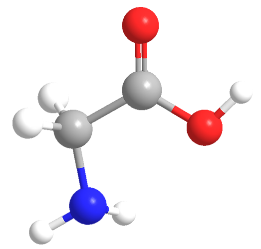
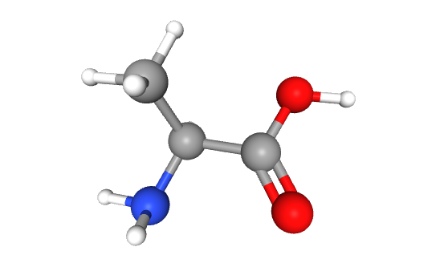
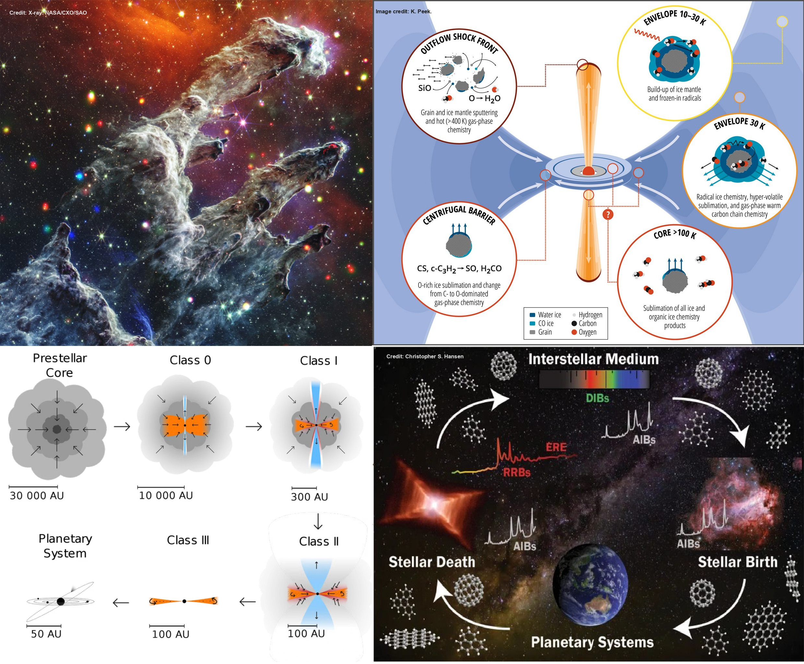
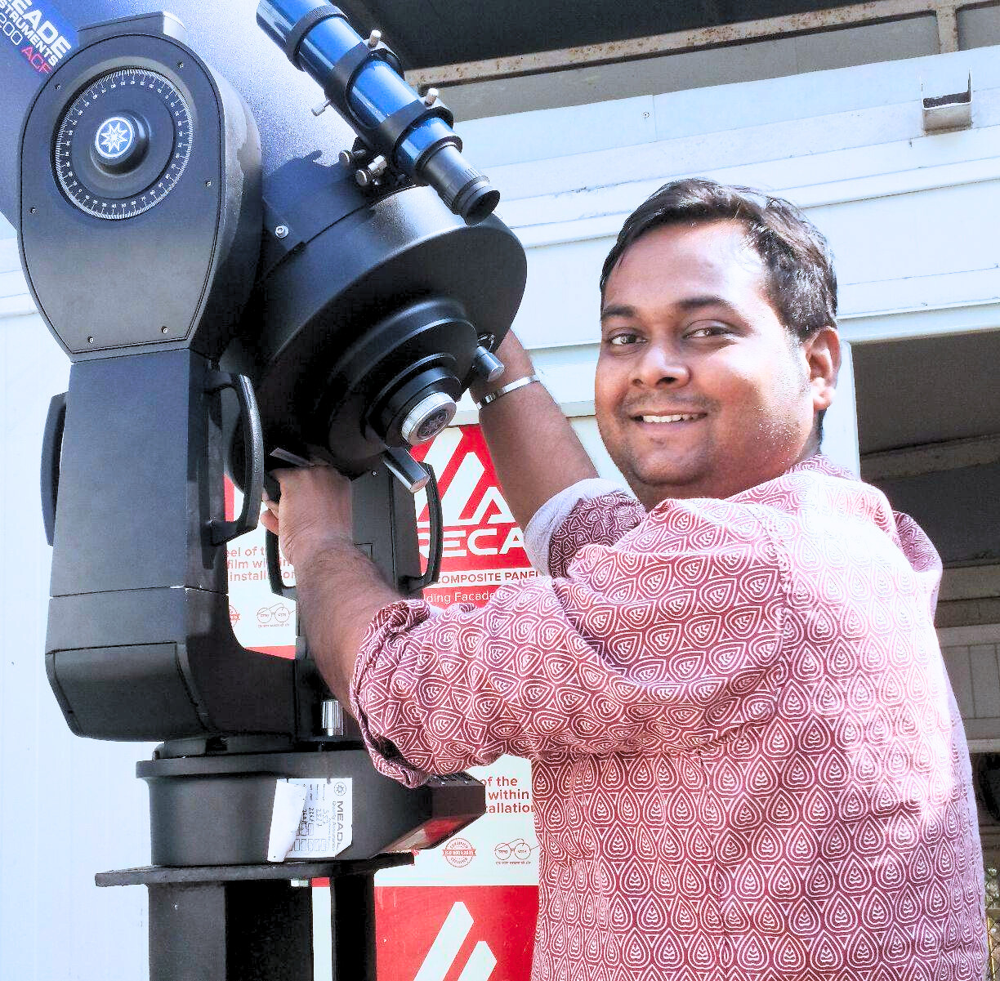

Exploring the prebiotic chemistry that leads to stars and life.



My name is Dr. Arijit Manna, and I am currently a Postdoctoral Fellow in the Department of Astrophysics and High Energy Physics at the S. N. Bose National Centre for Basic Sciences (SNBNCBS), Kolkata, India. I received my Ph.D in Physics from Vidyasagar University, West Midnapore, India, in 2026. My research focuses on the chemical composition and evolution of star-forming regions, with particular emphasis on the formation pathways of complex organic molecules (COMs) and prebiotic species that are central to understanding the origins of life. By integrating observational astronomy with astrochemical modelling, I aim to uncover how molecular complexity emerges in diverse astrophysical environments. To pursue this goal, I analyze high-resolution data from leading radio and millimeter-wavelength observatories, including the Atacama Large Millimeter/submillimeter Array (ALMA), Very Large Array (VLA), Submillimeter Array (SMA), Green Bank Telescope (GBT), and the IRAM 30-meter Telescope. These state-of-the-art facilities enable me to probe the physical conditions and molecular inventories of hot molecular cores, protostellar envelopes, and other early stages of star formation. In parallel with my observational work, I employ advanced gas–grain chemical modelling techniques to simulate the intricate interplay between physical and chemical processes that govern molecular synthesis in the interstellar medium. This integrated approach bridges the gap between observed molecular abundances and theoretical formation pathways, offering deeper insights into astrochemical evolution across cosmic timescales.
Visit my Google Scholar and ORCiD profiles to learn more about my work.
Curious about my journey? Explore my CV.
For any queries or collaboration opportunities, please contact me at arijit.manna@bose.res.in / amanna.astro@gmail.com.The interstellar medium (ISM) is a chemically rich environment where over three hundred molecular species have been identified, primarily through observations at millimeter and submillimeter wavelengths. Among these, complex organic molecules (COMs), key precursors to biologically relevant compounds, have been found to be particularly in the active star formation regions. Despite decades of research, the formation mechanisms of many of these molecules, especially under the extreme physical conditions of space, remain poorly understood. Our research group is dedicated to advancing our understanding of the astrochemical processes that govern the emergence of molecular complexity in star-forming regions. We focus on the rotational emission and absorption spectra of various COMs, including molecules that are potential precursors to glycine (NH2CH2COOH), the simplest amino acid. Observations are conducted using state-of-the-art radio and millimeter-wavelength facilities such as the Atacama Large Millimeter/submillimeter Array (ALMA), Green Bank Telescope (GBT), IRAM 30-meter Telescope, and others. Following detection, we apply a three-phase (gas + grain + icy mantle) warm-up chemical model incorporating both gas-phase and grain surface reactions to investigate the formation pathways of these molecules. This modelling approach allows us to simulate the dynamic and thermally evolving environments in which these species arise, bridging the gap between observations and theoretical predictions. Through this integrated observational and computational methodology, our work sheds light on how interstellar molecules assemble in protostellar environments and contribute to the chemical evolution of nascent planetary systems. Ultimately, we aim to understand how such molecules may have played a crucial role in seeding the building blocks of life in our own solar system and possibly beyond.
Our research group is dedicated to advancing the understanding of astrochemical processes in star-forming regions. Below are selected highlights and achievements that reflect our contributions to the field, including molecular detections, high-resolution ALMA observations, theoretical modelling, and collaborative publications. These accomplishments demonstrate our commitment to uncovering the chemical complexity of the universe and supporting the broader astronomical community through innovative research.